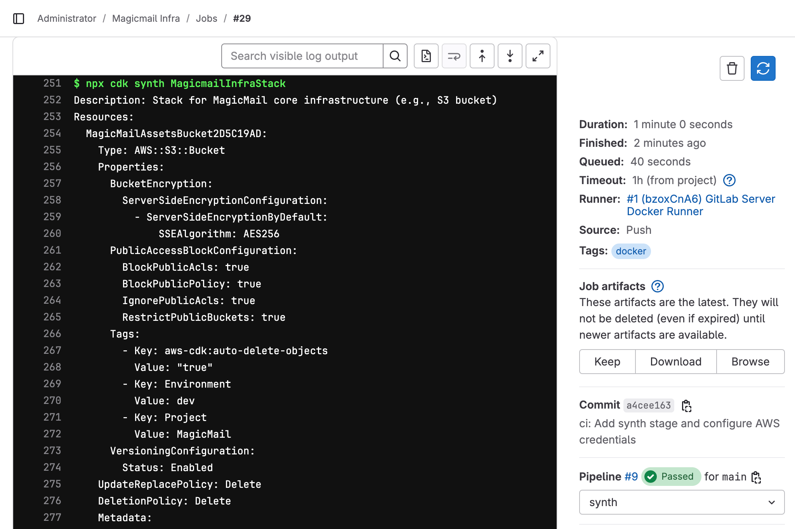

Chapter 6
Integrating AWS and Deploying with CI/CD
Ethan watched the pipeline status turn green in GitLab. The prepare stage installed dependencies and cached them, and the validate stage successfully ran both the linter and the unit tests using the cache. It was satisfying to see the automation working reliably after every push.
"Alright, Maya," Ethan said, "this is really cool! The pipeline automatically checks my code quality and runs the basic Jest test every time I push. It feels much safer already. But," he added, looking at the .gitlab-ci.yml file, "we're still missing the actual CDK parts, like synth and eventually deploy for the S3 bucket stack we built in Book 1."
Maya nodded. "Exactly. Our current pipeline validates the code itself, but it doesn't interact with AWS or check the infrastructure definitions in detail. To run commands like cdk synth (which might perform context lookups requiring AWS API calls) or cdk deploy (which definitely needs to interact with AWS), our pipeline needs two things: the necessary AWS credentials and the permissions associated with those credentials."
"Ah, right," Ethan recalled. "Like how my local terminal needs my magicmail-dev profile configured to deploy?"
"Precisely," Maya confirmed. "But we can't just hardcode our secret access keys directly into the .gitlab-ci.yml file – that would be a major security risk! Anyone who could see the code could steal our credentials. We need a secure way to provide these credentials to the GitLab Runner only when it needs them to run specific jobs that interact with AWS."
"So, this chapter is about connecting the pipeline securely to AWS and adding the actual CDK commands to manage our existing MagicmailInfraStack?" Ethan asked.
"You got it," Maya replied. "We'll explore secure methods for handling AWS credentials in GitLab CI/CD, add jobs to synthesize our stacks, preview changes with cdk diff, and finally, add a deployment job with a manual approval step, bringing us closer to fully automated infrastructure management."
"Running cdk synth and cdk deploy from our CI/CD pipeline unlocks the true power of automating infrastructure management," Maya began. "But it requires careful handling of AWS credentials."
Securely Handling AWS Credentials in GitLab CI/CD
"Hardcoding credentials in .gitlab-ci.yml is never acceptable," Maya stated firmly. "GitLab provides a secure mechanism for this: CI/CD Variables."
What are CI/CD Variables? These are key-value pairs that you can define within GitLab's settings (at the project, group, or instance level). GitLab makes these variables available as environment variables to the runner during job execution.
Security Features:
Protected: Variables marked as 'Protected' are only passed to jobs running on protected branches (like
mainby default) or protected tags. This prevents them from being exposed in pipelines running on feature branches.Masked: Variables marked as 'Masked' will have their values replaced with
[MASKED]in job logs, preventing accidental exposure. Note: Masking has limitations and might not work perfectly for complex, multi-line secrets.
Scope: Variables can be scoped to specific environments (like
production,staging), which is useful for managing different credentials for different deployment targets.
Strategy: Using IAM User Credentials via Variables
"For our setup, the most straightforward approach is to create a dedicated IAM user for our CI/CD pipeline, grant it the necessary permissions to deploy our CDK stacks, and then store its AWS Access Key ID and Secret Access Key as protected, masked CI/CD variables in GitLab."
Create CI/CD IAM User (Manual Step):
"First, we need an IAM user in our AWS account specifically for GitLab CI/CD," Maya instructed. "Go to the AWS IAM console."
Create a new user (e.g.,
gitlab-cicd-user).Select "Provide user access to the AWS console - optional"
Attach policies directly: Search for and attach the
AdministratorAccesspolicy. WARNING: Granting AdministratorAccess is highly discouraged for production pipelines due to security risks. For this learning exercise, it simplifies permission management, but in a real-world scenario, you would create a custom policy granting only the minimum necessary permissions required for CDK deployment (e.g., CloudFormation access, permissions for specific services being created like S3, DynamoDB, IAM roles, etc.). We will refine permissions later.Complete user creation.
Crucially: On the final screen, copy the Access key ID and the Secret access key. Store these securely temporarily – you'll need them in the next step, and the secret key won't be shown again.
Caption: Creating a dedicated IAM user and copying its credentials.
Add Credentials as GitLab CI/CD Variables:
"Now, go back to your
magicmail-infraproject in GitLab."Navigate to Settings -> CI/CD.
Expand the Variables section.
Click Add variable.
Create three variables:
Key:
AWS_ACCESS_KEY_IDValue: Paste the Access Key ID you just copied from AWS.
Flags: Check Protect variable and Mask variable.
Click Add variable.
Key:
AWS_SECRET_ACCESS_KEYValue: Paste the Secret Access Key you copied from AWS.
Flags: Check Protect variable and Mask variable.
Click Add variable.
Key:
AWS_DEFAULT_REGIONValue: Enter your target AWS region (e.g.,
us-east-1).Flags: Leave Protect/Mask unchecked (region is not sensitive).
Click Add variable.
Caption: Adding AWS credentials as protected and masked CI/CD variables in GitLab.
"Now, GitLab will securely inject these three variables as environment variables into the runner's environment for jobs running on protected branches/tags."
Configuring AWS Credentials in the Job
"Next, we need to tell the tools running inside the Docker container (specifically, the AWS CLI and CDK) to use these credentials. We do this using a before_script section in the jobs that need AWS access."
xxxxxxxxxx# Example job needing AWS credentials
synth_job stagesynth # Example stage before_scriptecho "Configuring AWS credentials..." # Install AWS CLI if not present in the base imageapt-get update -y && apt-get install -y awscli # Configure AWS CLI using the variables provided by GitLabaws configure set aws_access_key_id $AWS_ACCESS_KEY_IDaws configure set aws_secret_access_key $AWS_SECRET_ACCESS_KEYaws configure set region $AWS_DEFAULT_REGIONecho "AWS configuration complete." scriptecho "Running AWS/CDK command..."npx cdk synth # CDK will automatically use the configured credentialsbefore_script:: Runs before the main script: section.apt-get install -y awscli: Installs the AWS CLI inside the container (necessary as the basenode:18image doesn't include it). (Note: For future projects, especially those not primarily Node.js based, using a pre-built Docker image from sources like AWS ECR Public Gallery that already includes the AWS CLI can be more efficient than installing it in every job run).aws configure set ...: Uses the environment variables ($AWS_ACCESS_KEY_ID, etc.) injected by GitLab to configure the default AWS CLI profile within the container.CDK Usage: The AWS CDK Toolkit automatically detects and uses credentials configured for the default AWS CLI profile.
"With this setup, our pipeline jobs can securely interact with AWS."
Adding the synthStage
"Let's integrate the cdk synth command into our pipeline," Maya suggested. "This command synthesizes our CDK code into a CloudFormation template. Running it in CI ensures that our code is valid and can be translated into a deployable format. It also performs context lookups (like finding the default VPC or AMI IDs), which requires the AWS credentials we just configured."
"We'll add a new synth stage to our .gitlab-ci.yml file, running after the validate stage."
Updating .gitlab-ci.yml
"Modify your local .gitlab-ci.yml file:"
xxxxxxxxxx# .gitlab-ci.yml - Version 4 (Adding Synth Stage)
# Define the stagesstagespreparevalidatesynth # <-- Add synth stage
default imagenode18 tagsdocker
# --- (prepare, validate jobs stay the same) ---
# --- Synth Stage --- <-- NEW STAGE & JOB
synthesize_template stagesynth before_script# Configure AWS credentials for this jobecho "Configuring AWS credentials for synth..."apt-get update -y && apt-get install -y awscliaws configure set aws_access_key_id $AWS_ACCESS_KEY_IDaws configure set aws_secret_access_key $AWS_SECRET_ACCESS_KEYaws configure set region $AWS_DEFAULT_REGIONecho "AWS configuration complete." scriptecho "Compiling TypeScript (needed for synth)..."npm run build # Synth requires compiled JS codeecho "Synthesizing CloudFormation templates..." # Synthesize the main stack (adjust if you have multiple)npx cdk synth MagicmailInfraStack # Optional: Synthesize other stacks if needed, like the GitLab server stack # - npx cdk synth GitLabServerStack needsinstall_deps # Needs dependencies installed cache# Reuse the cache key filespackage-lock.json pathsnode_modules/ policypull artifacts# Save the synth output pathscdk.out/ expire_in1 day"Here's what we did:"
Added
synthtostages: Defined the new stage, ensuring it runs after validate.Created
synthesize_templateJob:Assigned it to the
synthstage.Added the
before_scriptsection to install the AWS CLI and configure credentials using the GitLab CI/CD variables ($AWS_ACCESS_KEY_ID, etc.).The main
scriptfirst runsnpm run build(sincecdk synthneeds the compiled JavaScript) and then runsnpx cdk synth MagicmailInfraStack. We are focusing on the main application stack from Book 1.Included
needs: [install_deps]andcache: to reuse thenode_modulescache.Added the
artifacts:section to save thecdk.outdirectory, which now contains the synthesized CloudFormation template.
Committing and Running the Updated Pipeline
"Save the changes to .gitlab-ci.yml."
"Commit and push
xxxxxxxxxx# Stage the changesgit add .gitlab-ci.yml
# Commit the changesgit commit -m "ci: Add synth stage and configure AWS credentials"
# Push the changesgit push origin main"Now, check the pipeline in GitLab (CI/CD -> Pipelines). You should see the new synth stage appear after validate. The synthesize_template job will run, install the AWS CLI, configure credentials, compile the code, and finally execute cdk synth. If it succeeds, it means our pipeline can now securely authenticate to AWS and synthesize our CDK application!"
Caption: Pipeline view showing the added synth stage.
 Caption: Job log showing successful AWS configuration and CDK synthesis.
Adding the diff Stage
"Synthesizing is good, but before deploying infrastructure changes, it's crucial to understand exactly what those changes are," Maya stressed. "The cdk diff command compares the template generated by your current code (the one synthesized in the previous stage) against the currently deployed CloudFormation stack in AWS. It shows you a summary of additions, modifications, and deletions."
"Running cdk diff in the pipeline provides a vital safety check and review point."
"Let's add a diff stage after synth."
Updating .gitlab-ci.yml (Diff)
"Modify your local .gitlab-ci.yml file again:"
xxxxxxxxxx# .gitlab-ci.yml - Version 5 (Adding Diff Stage)
# Define the stagesstagespreparevalidatesynthdiff # <-- Add diff stage
default imagenode18 tagsdocker
# --- (prepare, validate, synth jobs stay the same) ---
# --- Diff Stage --- <-- NEW STAGE & JOB
preview_changes stagediff before_script# Also needs AWS credentialsecho "Configuring AWS credentials for diff..."apt-get update -y && apt-get install -y awscliaws configure set aws_access_key_id $AWS_ACCESS_KEY_IDaws configure set aws_secret_access_key $AWS_SECRET_ACCESS_KEYaws configure set region $AWS_DEFAULT_REGIONecho "AWS configuration complete." scriptecho "Compiling TypeScript (needed for diff)..."npm run build # Diff also needs compiled codeecho "Checking for infrastructure changes..." # Run cdk diff for the main stacknpx cdk diff MagicmailInfraStack needsinstall_deps # Needs dependencies installed # Could also depend on 'synthesize_template' if we used its artifacts cache# Reuse the cache key filespackage-lock.json pathsnode_modules/ policypull # This job typically runs on all branches (including merge requests) # to allow reviewing changes before merge/deploy. # We'll refine rules later."Key changes:"
Added
difftostages: Runs aftersynth.Created
preview_changesJob:Assigned to the
diffstage.Includes the
before_scriptto configure AWS credentials.Runs
npm run build(ascdk diffalso needs the compiled code to compare against the deployed state).Runs
npx cdk diff MagicmailInfraStackto compare the synthesized template with the deployed stack.Includes
needs: [install_deps]andcache:. (Note: We could make itneeds: [synthesize_template]and potentially use the artifacts fromsynthinstead of rebuilding, but for simplicity now, we rebuild).
Committing and Running the Updated Pipeline (Diff)
"Save the changes to .gitlab-ci.yml."
"Commit and push:"
xxxxxxxxxx# Stage the changesgit add .gitlab-ci.yml
# Commit the changesgit commit -m "ci: Add diff stage to preview changes"
# Push the changesgit push origin main"Check the pipeline again. The new diff stage with the preview_changes job will run after synth. Click into the job log – you should see the output of cdk diff. If there are no changes between your code and the deployed stack, it will likely just print the stack ARN. If there are differences (e.g., if you modified the S3 bucket properties locally but hadn't deployed yet), it would show a summary of those changes."
Caption: Pipeline view showing the added diff stage.
Caption: Job log showing the output of cdk diff.
"This diff step is invaluable. In a team workflow, you'd typically run this pipeline on Merge Requests, allowing reviewers to see the exact infrastructure impact before approving the merge."
Adding the deploy Stage (with Manual Approval)
"Alright, Ethan," Maya said, "our pipeline can now validate, synthesize, and preview changes. The final step is to automate the deployment itself — using cdk deploy."
"We'll add a new deploy stage and create a deploy_app job that handles deploying the MagicmailInfraStack to AWS."
Maya paused for emphasis. "Now, technically, we could configure it so that every time you push to main, the deployment happens automatically. But that can be dangerous."
"Imagine a small typo in your CDK code accidentally deletes a resource — and the pipeline immediately deploys it to production without anyone reviewing the change. Full automation sounds cool, but when it comes to infrastructure, moving too fast without checks can cause real damage."
"That's why we'll configure the deployment job with a manual approval gate. After the pipeline runs cdk diff and shows what would change, the deploy job will pause. You'll be able to review the diff carefully, and only when you're confident, manually trigger the deployment by clicking a button in GitLab."
Ethan nodded. "Makes sense — safety first."
xxxxxxxxxx# .gitlab-ci.yml - Version 7 (Adding Deploy Stage with Manual Approval Gate)
# Define the stagesstagespreparevalidatesynthdiffdeploy
default imagenode18 tagsdocker
# --- (prepare, validate, synth, diff jobs stay the same) ---
# --- Deploy Stage --- <-- NEW STAGE & JOB
deploy_app stagedeploy before_script# Also needs AWS credentialsecho "Configuring AWS credentials for deploy..."apt-get update -y && apt-get install -y awscliaws configure set aws_access_key_id $AWS_ACCESS_KEY_IDaws configure set aws_secret_access_key $AWS_SECRET_ACCESS_KEYaws configure set region $AWS_DEFAULT_REGIONecho "AWS configuration complete." scriptecho "Compiling TypeScript (needed for deploy)..."npm run build # Deploy also needs compiled codeecho "Deploying CDK stack..." # Deploy the main stack; --require-approval never avoids interactive prompts in CInpx cdk deploy MagicmailInfraStack --require-approval never needspreview_changes # Run only after diff job succeeds cache# Reuse the cache key filespackage-lock.json pathsnode_modules/ policypull rules# Control when this job runsif'$CI_COMMIT_BRANCH == "main"' # Only run on pushes/merges to the main branch whenmanual # Run only if manually triggered allow_failurefalse # Optional: Fail pipeline if manual job isn't run/fails
Key changes:
Added
deploytostages: Definesdeployas the final stage.Created
deploy_appjob:Assigned it to the
deploystage.Configures AWS credentials using
before_script.Runs
npm run buildandnpx cdk deploy MagicmailInfraStack --require-approval never.Depends on
preview_changes: Ensures deployment only happens if the diff succeeds.Added
rules:section:if:
'$CI_COMMIT_BRANCH == "main"': Only deploy when changes are merged intomain.when: manual: Pauses the pipeline after the diff; requires a manual trigger to deploy.allow_failure: false: (Optional) Fails the pipeline if the deploy is skipped or fails.
Optimizing with YAML Anchors
"One more thing before we commit this... let's optimize it!" Maya suggested. "Notice the before_script for AWS configuration is repeated in synthesize_template, preview_changes, and deploy_app. We can define it once using an anchor."
"Oh yeah, that does look repetitive," Ethan observed. "Is there a way to avoid copying and pasting that setup?"
"Exactly!" Maya confirmed. "We use a YAML feature called Anchors and Aliases. We define a reusable block in a hidden job (name starts with .) and give it an anchor (&). Then, other jobs use an alias (*) to include that block."
"Add the .aws_configure_template hidden job at the top and replace the before_script sections in the other jobs with <<: *aws_configure."
xxxxxxxxxx# .gitlab-ci.yml - Version 8 (Optimized)
# Define a hidden job template for AWS configuration.aws_configure_template&aws_configure before_scriptecho "Configuring AWS credentials..."apt-get update -y && apt-get install -y awscliaws configure set aws_access_key_id $AWS_ACCESS_KEY_IDaws configure set aws_secret_access_key $AWS_SECRET_ACCESS_KEYaws configure set region $AWS_DEFAULT_REGIONecho "AWS configuration complete."
# Define the stagesstagespreparevalidatesynthdiffdeploy
default imagenode18 tagsdocker
# --- Prepare Stage ---install_deps stageprepare scriptnpm ci cache key filespackage-lock.json pathsnode_modules/ policypull-push
# --- Validate Stage ---lint_code stagevalidate scriptnpm run lint needsinstall_deps cache key filespackage-lock.json pathsnode_modules/ policypull
test_code stagevalidate scriptnpm run test needsinstall_deps cache key filespackage-lock.json pathsnode_modules/ policypull
# --- Synth Stage ---synthesize_template stagesynth <<*aws_configure # <-- Use the anchor alias scriptnpm run buildnpx cdk synth MagicmailInfraStack needsinstall_deps cache key filespackage-lock.json pathsnode_modules/ policypull artifacts pathscdk.out/ expire_in1 day
# --- Diff Stage ---preview_changes stagediff <<*aws_configure # <-- Use the anchor alias scriptnpm run buildnpx cdk diff MagicmailInfraStack needsinstall_deps cache key filespackage-lock.json pathsnode_modules/ policypull
# --- Deploy Stage ---deploy_app stagedeploy <<*aws_configure # <-- Use the anchor alias scriptnpm run buildecho "Deploying CDK stack to AWS..."npx cdk deploy MagicmailInfraStack --require-approval never needspreview_changes cache key filespackage-lock.json pathsnode_modules/ policypull rulesif'$CI_COMMIT_BRANCH == "main"' whenmanual allow_failurefalse"This pipeline version is functionally identical but much cleaner."
Committing and Running the Optimized Pipeline
"Save this optimized .gitlab-ci.yml."
"Commit and push:"
xxxxxxxxxx# Stage the changesgit add .gitlab-ci.yml
# Commit the changesgit commit -m "ci: Add diff and deploy stages, optimize AWS config"
# Push the changesgit push origin main"Because you pushed to main, the full pipeline including the deploy stage will run."
Go to GitLab: Navigate to CI/CD -> Pipelines.
Observe: Watch the pipeline progress through all stages:
prepare,validate,synth, anddiff.Manual Trigger: Once the
diffstage succeeds, the pipeline will pause. Thedeploy_appjob in thedeploystage will show a "play" icon (manual trigger).
Caption: Pipeline paused, waiting for manual trigger on the deploy job.
Review Diff (Optional but Recommended): Before triggering, click into the completed
preview_changesjob and review thecdk diffoutput in the log to confirm the expected changes.Trigger Deploy: Click the "play" icon next to the
deploy_appjob to manually start the deployment.Check Logs: Monitor the
deploy_appjob log to see the CloudFormation deployment progress.
 Caption: Job log showing successful execution of
Caption: Job log showing successful execution of cdk deploy after manual trigger.
"Success!" Maya beamed. "You've now built a robust CI/CD pipeline with validation, preview, and a manual deployment gate for your CDK project. This provides a great balance of automation and control."
Tests, Tests, and More Tests
Maya tapped her screen and said, "Now that we've got our synth and diff jobs working, there are a couple more checks we can add — like running cfn-lint to verify the generated CloudFormation, and even cdk-nag for security and compliance."
Ethan blinked. "Wait — more checks? Isn't cdk synth already enough?"
Maya smiled. "Not quite. Think of cdk synth as generating the blueprint, but it doesn’t always warn you if the blueprint is invalid. That’s where tools like cfn-lint come in."
Ethan leaned back in his chair. "We’ve got ESLint and Jest in validate, then cdk synth, then cdk diff, and now possibly cfn-lint and cdk-nag? This is starting to feel like a lot."
Maya chuckled sympathetically. "It’s totally fair to feel overwhelmed right now. But let’s step back and look at the big picture. Each of these tests plays a specific role — they're like different filters that catch different kinds of issues before we deploy anything. Let me show you a table that summarizes it all."
She opened her notebook and drew the following table:
| Test / Tool | What It Tests | What It Tests Against | Stage | Prevents / Ensures |
|---|---|---|---|---|
eslint | Code style and syntax consistency | TypeScript source files | validate | Enforces readable, maintainable code |
jest | Unit test behavior and correctness | TypeScript source files | validate | Verifies that logic behaves as expected |
cdk synth | CDK-to-CloudFormation conversion | CDK code (compiled JavaScript) | synth | Ensures CDK code can produce a valid CloudFormation template |
cfn-lint | Structural and semantic correctness of CFN | Synthesized template (cdk.out/*.json) | lint | Catches CloudFormation errors before deployment |
cdk diff | Difference between generated and deployed stack | Current vs deployed CloudFormation stack | diff | Visualizes changes before apply for review and safety |
cdk-nag (optional) | Security and compliance rule violations | CDK constructs (via Aspects) | synth* | Highlights insecure configurations or non-compliant infra |
*
cdk-nagruns implicitly duringcdk synthif configured usingAspects.
Ethan nodded slowly. "That actually helps a lot. I didn’t realize each tool was looking at a different part of the process."
Maya smiled. "Exactly. And now that you see the big picture, let’s add another simple but powerful step — cfn-lint."
Adding another lint Stage after synth with cfn-lint
"We’ve now synthesized our stack into a CloudFormation template in the cdk.out directory. But how do we know that the generated template is structurally valid? To catch issues early, we can run a tool called cfn-lint to validate the synthesized template before moving on to the diff and deploy stages."
"cfn-lint checks the syntax, structure, and compliance of your CloudFormation templates — making sure things like property names and resource types are correct. It’s especially helpful for catching errors that CDK might allow at synth-time but that AWS CloudFormation would reject at deploy-time."
"So add the lint stage to your .gitlab-ci.yml file and a corresponding lint_cfn_template job:
xxxxxxxxxx# .gitlab-ci.yml - Version 9 (Adding Lint Stage for cfn-lint After synth)
# Define reusable AWS credential configuration.aws_configure_template&aws_configure before_scriptecho "Configuring AWS credentials..."apt-get update -y && apt-get install -y awscliaws configure set aws_access_key_id $AWS_ACCESS_KEY_IDaws configure set aws_secret_access_key $AWS_SECRET_ACCESS_KEYaws configure set region $AWS_DEFAULT_REGIONecho "AWS configuration complete."
stagespreparevalidatesynthlint # <-- NEW: Stage to validate synthesized CloudFormation templatediffdeploy
default imagenode18 tagsdocker
# --- Prepare Stage ---install_deps stageprepare scriptnpm ci cache key filespackage-lock.json pathsnode_modules/ policypull-push
# --- Validate Stage ---lint_code stagevalidate scriptnpm run lint needsinstall_deps cache key filespackage-lock.json pathsnode_modules/ policypull
test_code stagevalidate scriptnpm run test needsinstall_deps cache key filespackage-lock.json pathsnode_modules/ policypull
# --- Synth Stage ---synthesize_template stagesynth <<*aws_configure scriptnpm run buildnpx cdk synth MagicmailInfraStack needsinstall_deps cache key filespackage-lock.json pathsnode_modules/ policypull artifacts pathscdk.out/ expire_in1 day
# --- Lint Stage ---# This MUST come after synth, because it runs on the output of `cdk synth` (in cdk.out)lint_cfn_template stagelint <<*aws_configure scriptecho "Installing cfn-lint..." # The node:18 image does not include Python by defaultapt-get update && apt-get install -y python3 python3-pippython3 -m pip install --break-system-packages cfn-lintecho "Validating CloudFormation template..."cfn-lint cdk.out/MagicmailInfraStack.template.json needssynthesize_template cache key filespackage-lock.json pathsnode_modules/ policypull
# --- Diff Stage ---preview_changes stagediff <<*aws_configure scriptnpm run buildnpx cdk diff MagicmailInfraStack needsinstall_deps cache key filespackage-lock.json pathsnode_modules/ policypull
# --- Deploy Stage ---deploy_app stagedeploy <<*aws_configure scriptnpm run buildnpx cdk deploy MagicmailInfraStack --require-approval never needspreview_changes cache key filespackage-lock.json pathsnode_modules/ policypull rulesif'$CI_COMMIT_BRANCH == "main"' whenmanual allow_failurefalse"This job installs cfn-lint and runs it on the template that was generated by cdk synth. If the template is valid, the job will succeed. If there are any issues — such as a missing property or typo — the job will fail, preventing the pipeline from moving forward."
"Ok. So are we goint to add cdk-nag too? Security and compliance checks seem to be pretty important."
Committing and Running the Updated Pipeline
"Save this updated .gitlab-ci.yml."
"Commit and push:"
xxxxxxxxxx# Stage the changesgit add .gitlab-ci.yml
# Commit the changesgit commit -m "ci: Addlint stage for cfn-lint"
# Push the changesgit push origin main"This job installs cfn-lint and runs it on the template that was generated by cdk synth. If the template is valid, the job will succeed. If there are any issues — such as a missing property or typo — the job will fail, preventing the pipeline from moving forward.
Caption: Job log showing cfn-lint warning, and successful execution of cdk deploy after manual trigger.
Ethan watched as the pipeline moved forward anyway. "Interesting... even though cfn-lint flagged a warning, the diff stage still ran — and I was able to trigger the deploy manually."
Maya nodded. "That's a great observation. Warnings don't always block the pipeline unless we configure them to. But they’re still important clues. In this case, the warning was about an unnecessary dependency in your synthesized CloudFormation template. It’s not fatal, but it might indicate something you could clean up."
She continued, "I’d recommend looking into that warning when you have time — it could lead to a useful refactor of how your stack manages resources. It’s the kind of thing that’ll make your infrastructure cleaner and more maintainable over time."
Nag or Not To Nag
Ethan tilted his head. "Okay... so are we going to add cdk-nag too? I mean, security and compliance checks seem pretty important, especially if we’re working toward production-ready infrastructure."
Maya nodded. "You're absolutely right — cdk-nag is a powerful tool for security and compliance checks. The only catch is, it integrates into the CDK using a feature called Aspects, which allows rule engines to traverse the construct tree during cdk synth. We intentionally skipped the topic of Aspects in Book 1 to keep things focused and beginner-friendly. If you're curious, we'll cover it more thoroughly in a future book when we explore more advanced CDK patterns."
She leaned over her laptop. "But for a curious mind like yours, Ethan, here’s a sneak peek:"
xxxxxxxxxximport { AwsSolutionsChecks } from 'cdk-nag';import { Aspects } from 'aws-cdk-lib';
Aspects.of(app).add(new AwsSolutionsChecks());With this setup, security violations will be printed automatically during cdk synth. Since Aspects are a new topic to you, we will skip this for now and revisit it later.
Seeing the Total Testing Flow in the Pipeline
Ethan leaned back, eyes wide. “Okay, that’s a lot. But also... kind of awesome.”
Maya laughed. “It is, isn’t it? Think about it — we’re now validating code quality, testing functionality, converting our CDK to CloudFormation, linting it, checking what would change, and even staging deployment with manual approval.”
She opened her laptop and rotated it toward Ethan. “Let me show you how all of that fits together in one visual. It’s easier to see the flow when it’s laid out.”
Ethan nodded. “Yeah — I’d love to see the whole thing mapped out.”
Tagging the End of Chapter 6
"Ok. Today was a good session with a lot of learnings. Let's tag the end of Chapter 6 to mark the completion of our first full CI/CD pipeline," said Maya.
Ensure main is Up-to-Date: Make sure you are on the main branch locally and have pulled the latest changes:
xxxxxxxxxxgit switch maingit pull origin mainCreate Local Tag: Create the tag pointing to the latest commit on main:
xxxxxxxxxxgit tag chapter-6-endPush Tag: Push this new tag to the remote GitLab server (origin):
xxxxxxxxxxgit push origin chapter-6-end"Fantastic! We now have tags marking the end of each chapter, making it easy to navigate the project's history."
Wrapping Up Chapter 6
"A huge accomplishment today, Ethan," Maya said warmly. "You've taken your pipeline beyond code validation — now it securely connects to AWS, synthesizes infrastructure, previews changes with cdk diff, and stages safe deployments with manual approval."
"You've built a full, professional-grade CI/CD system for your infrastructure — with the right balance of automation and control."
Maya nodded. "While there's always more you can explore — like security scanning, multi-environment deployments, and compliance checks — the skills you've built here are the backbone of real-world DevOps practices."
"Congratulations, Ethan. You're ready to tackle even larger cloud systems — safely, reliably, and at scale."
Ethan's Homework
Explore
rules:when: Read the GitLab CI/CD documentation about therules:if:whenkeyword, specifically the difference betweenon_success,manual, anddelayed.Protected Branches: Explore GitLab project settings (Settings -> Repository -> Protected branches) to understand how the
mainbranch is typically protected and how CI/CD variable protection interacts with this.Trigger a Change: Make a small, safe change to your
MagicmailInfraStack(e.g., add another tag to the S3 bucket). Commit and push tomain. Observe the pipeline run, review thecdk diffoutput in thepreview_changesjob, and then manually trigger thedeploy_appjob to apply the change.
Key Takeaways
Securely managing AWS credentials in CI/CD is crucial; avoid hardcoding keys.
GitLab CI/CD Variables provide a secure way to store credentials (
AWS_ACCESS_KEY_ID,AWS_SECRET_ACCESS_KEY,AWS_DEFAULT_REGION). Use Protected and Masked flags for sensitive values.Jobs needing AWS access require configuration (e.g., using
aws configurein abefore_script) to use the injected variables.YAML Anchors (
&) and Aliases (*) help keep.gitlab-ci.ymlDRY by defining reusable configuration blocks (likebefore_script).Adding a
cdk synthjob to the pipeline validates template synthesis and performs context lookups. Savingcdk.outas artifacts can be useful for subsequent stages.Adding a
cdk diffjob provides a crucial preview of infrastructure changes before deployment.Adding a
cdk deploy --require-approval neverjob automates the deployment.Using
rules:if:when: manualcreates a manual approval gate, pausing the pipeline before deployment until a user explicitly triggers the deploy job. This adds a layer of safety, especially for production environments.
Looking Ahead
Congratulations! You've successfully built a multi-stage CI/CD pipeline that automates the validation, synthesis, preview, and deployment (with manual approval) of your CDK infrastructure code using GitLab. This setup significantly improves consistency, safety, and efficiency compared to manual deployments.
Book 3 will be the start of designing and implementing shared services for MagicMail which also incorporates microservices design. Maya will guide Ethan through designing a microservices architecture for MagicMail. They'll identify core services, define boundaries and communication patterns, and plan how to structure their CDK application to implement this architecture effectively.
Key Services & Concepts Introduced
AWS Services:
IAM: Creating a dedicated user for CI/CD (though needing better permissions than AdministratorAccess in production).
CloudFormation: Synthesized from CDK, validated with
cfn-lint, and deployed viacdk deploy.
GitLab Features:
CI/CD Variables: Storing
AWS_ACCESS_KEY_ID,AWS_SECRET_ACCESS_KEY,AWS_DEFAULT_REGIONsecurely. Using Protected and Masked flags.
.gitlab-ci.yml:
Defining
stagesUsing
before_script,artifacts,needs, andcacheLeveraging
rules:if:when: manualfor controlled deploymentDefining YAML anchors (
&) and aliases (*) to reduce duplication.Manual Jobs: Understanding and triggering jobs set to
when: manual.
Tools & Concepts:
eslint: Enforces code quality and formatting.
jest: Runs unit tests to verify application behavior.
cdk synth: Transforms CDK code to CloudFormation; enables context lookups.
cfn-lint: Validates synthesized CloudFormation templates for structure and syntax.
cdk diff: Shows proposed changes compared to existing infrastructure.
cdk deploy --require-approval never: Automates stack deployment.
cdk-nag (optional): Adds security and compliance checks using CDK Aspects.
Aspects (preview only): Mechanism to apply global checks like cdk-nag.
DRY Pipelines: Avoiding repetition using YAML reuse patterns.
CI/CD Flow Design: Understanding the purpose and order of pipeline stages.